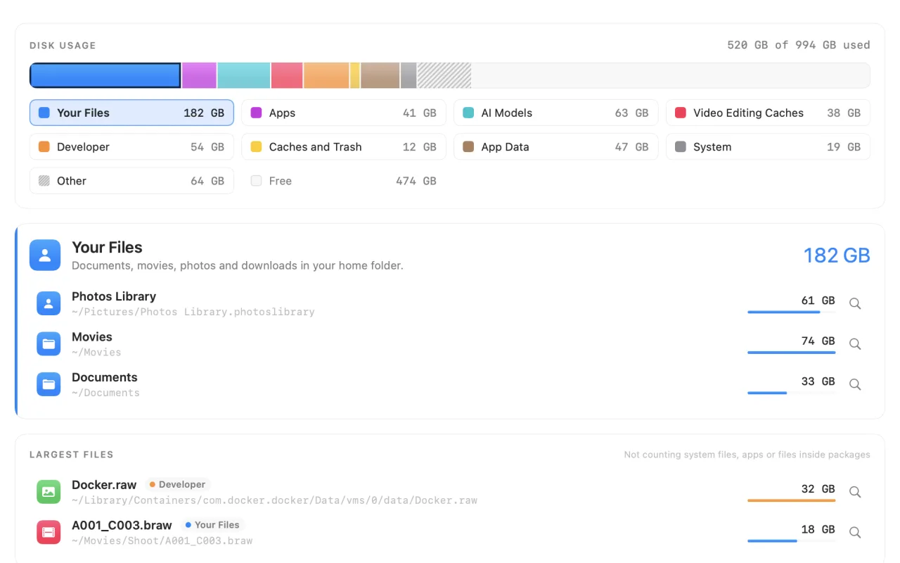
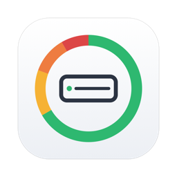
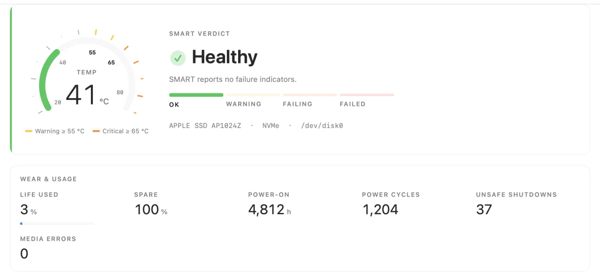

01
空間去哪了
點一類，下面就列出它的內容：照片圖庫多大、Ollama 的模型多大、DaVinci Resolve 的算圖快取多大。常見的大戶直接用名字列出來，不用在一層層的資料夾裡找。另外列出最大的幾個檔案，不算系統和 App 裡面的東西。


HDInfo 硬碟健康與空間 下載給 Mac 的硬碟工具・{{version}}
HDInfo 看硬碟的健康，找出空間被誰吃掉，再幫你清快取、找重複檔案、移除 App 連同殘留。每一樣都只移到垃圾桶。
第一次打開被 macOS 擋下？看安裝說明
01
點一類，下面就列出它的內容：照片圖庫多大、Ollama 的模型多大、DaVinci Resolve 的算圖快取多大。常見的大戶直接用名字列出來，不用在一層層的資料夾裡找。另外列出最大的幾個檔案，不算系統和 App 裡面的東西。

02
讀硬碟自己記錄的健康資料：溫度、壽命用掉多少、備用空間、通電時數、異常斷電次數，整理成「健康・警告・故障中・已故障」四級燈號。溫度超過你設的門檻就提醒你；選單列上看一眼也知道。

03
每個軟體一列，說清楚是什麼、清了會怎樣。App 開著就不能清；影響比較大的不會預設勾選。
04
大小、開頭、結尾、完整內容層層比對，只看你的資料。iCloud、Dropbox 還沒下載的檔案，不會因為比對而被下載。
05
連同設定、快取、登入項目一起找出來，逐項勾選。已經刪掉的 App 留下的殘留也找得到。
06
下載 HDInfo {{version}}，打開下載好的 HDInfo-{{version}}.dmg。
在打開的視窗裡，把 HDInfo 圖示拖到右邊的「Applications」資料夾。
HDInfo 目前還沒有經過 Apple 公證，所以第一次打開時 macOS 會擋下來。這是正常的，照下面做一次，之後就能直接打開。
xattr -dr com.apple.quarantine /Applications/HDInfo.app
空間分析與清理要讀整顆硬碟。第一次用到時，HDInfo 會帶你到「系統設定」→「隱私權與安全性」→「完整磁碟取用權限」打開 HDInfo。不開也能用，只是 macOS 會一個資料夾一個資料夾地問你，算出來的數字也會少。
07
你正在用的版本，在 App 選單的「關於 HDInfo」看得到。